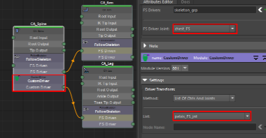

By using 'FollowSkeleton', you can create a single
joint chain tree that can be used by other programs, such as game engines.
Many nodes are not compatible with game engines by default because
their joints do not form a single joint chain tree.
To support game engines,
"FollowSkeleton" creates an FS joint for each skinning joint, constrains
itself to that joint, and parent itself under another FS joint.
As a result, a single
joint chain tree is created that has the same functionality as the rig.
Attributes:
- 'Support Scale' - An additional joint
with the suffix '_SCALE_FS_JNT' will be created under every FS joint to support scaling.
- 'Switch Skinning Tag' - The skinning
tag is transferred from the original joints to the FS joints.
Tagged skinning joints are used
by some attachments.
'MakeDynamic' and 'FollowSkeleton', for example, create their joints
only for skinning-tagged joints.
Arise's 'Helper
Tools' also use them for selecting joints.
- 'Enable Joints Color' - Enable changing the
color of the new FS joints.
- 'Joints Color' - Specify
the color of the new FS joints.
- 'Follow Joints'- The attachment
automatically fills out this information and you usually do not need to modify it.
- 'create_follow_joint' - Determines which joint gets a
follow-joint.
- 'parent_joint' - Select the parent of each FS joint. Choosing 'None'
means that it will be a top joint, and you can have more than one top joint.
- 'Reset
Changes' - Reset any changes made to the 'Follow Joints' table
above.
- 'FS_Driven' - A connection
attribute, the default value will be 'skeleton_grp', but to make the whole rig a single joint chain
tree, it should be connected to another node's 'FollowSkeleton'.
Through a connection the top joints are parented under the driver
joint of another 'FollowSkeleton'.
- 'FS Driver Joint' - This
joint will be the parent of other 'FollowSkeleton' attachments connected to the 'FS Driver'
attribute.
Notes:
- In order to connect to more than one FS joint, you may need
to use a 'CustomDriver' attachment.
As an example, the
arms connect to the chest joint on the spine and the legs to the pelvis joint on the spine, and only
one of those can be set in the 'FS Driver Joint' attribute, so the spine will need a 'CustomDriver' for the other
one.

- Using the 'Helper Tools' -> 'Weights Transfer
Tool', you can transfer skinning to the new FS joints.
- When 'create_follow_joint' for a joint is unchecked, other
joints will still have it listed as an option in the 'parent_joint' dropdown. Choosing that joint as
a 'parent_joint' will instead result in it becoming a top joint.
- 'FollowSkeleton' only displays joints tagged as 'skinning_joint'.
- If you want to add a 'FollowSkeleton' attachment to a 'Base' node, you must first
use a 'JointsSettings' attachment
and set the joint as a 'skinning_jnt', otherwise no joint will appear.
_____________________________________________
Get Arise at: https://www.ariserigging.com